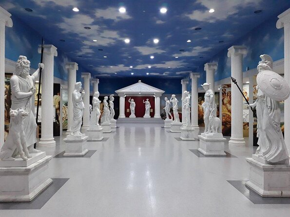

Estrutura do museu
No museu Trilhas da história grega, é oferecido interação e informação para todas as idades. Com várias galerias e salas, que contam com interação manual e visual. Confira um pouco do que você pode encontar:
Galeria dos deuses: |
 |
 |
Mitologia em movimento |